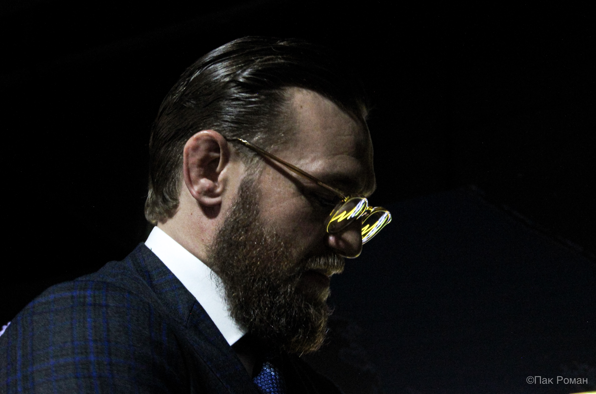
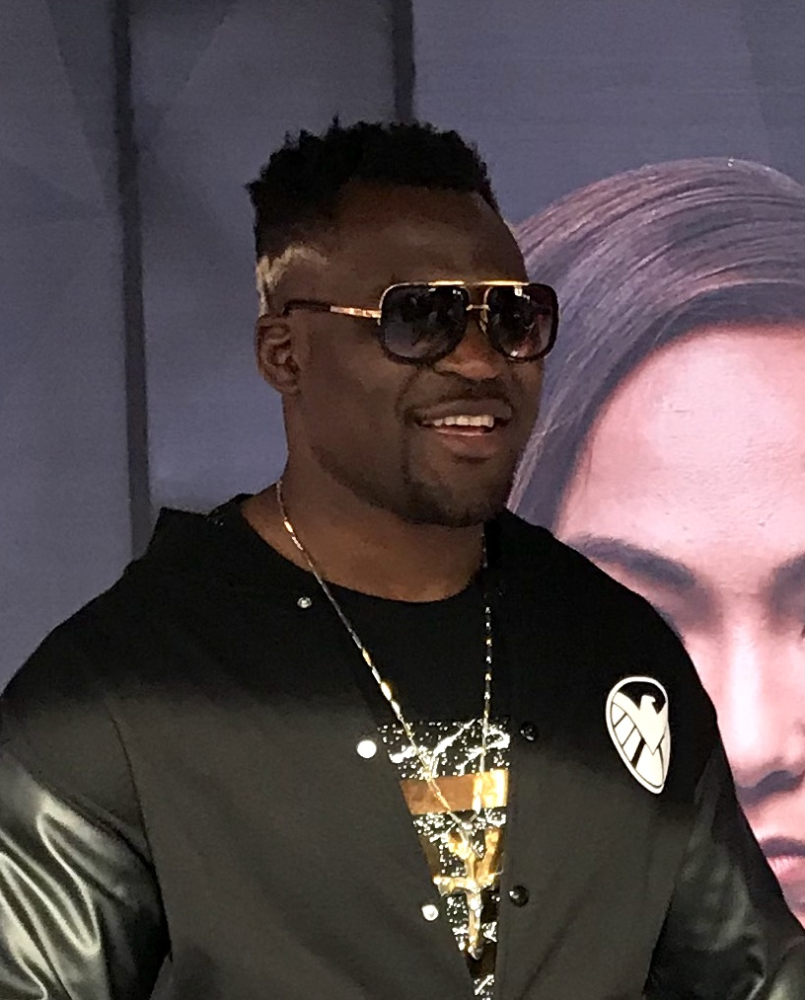
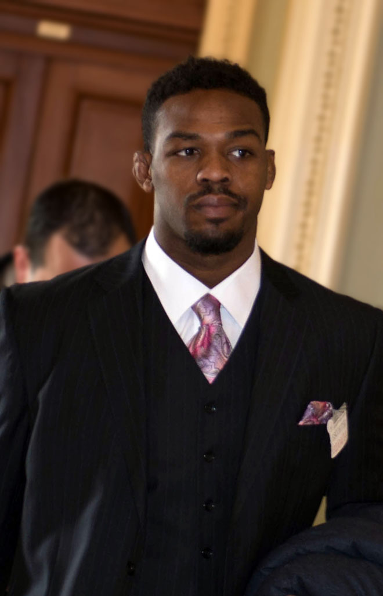
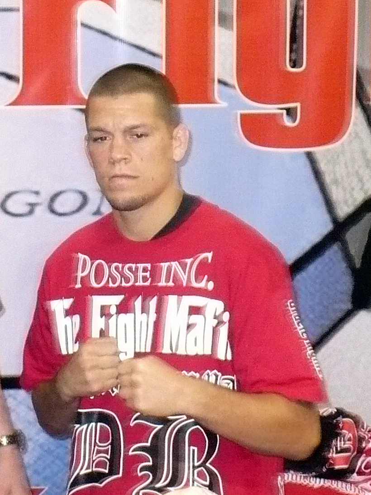
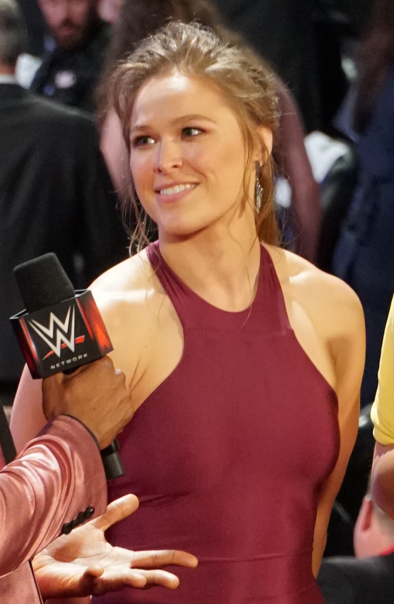
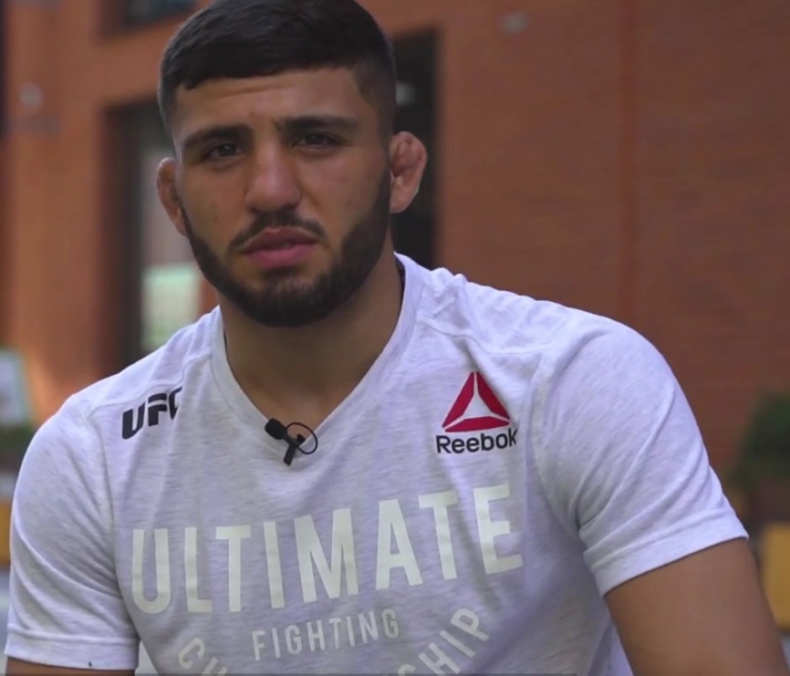
Collage photo credits
Mixed Martial Arts' biggest stars keep asking for one more walk to the cage. Why are the UFC stopping them?
The biggest stars in the
history of Mixed Martial Arts almost all belong to a generation
that is aging out. If you think about the biggest stars the sport has
ever seen, the chances are their peak years were in the 2010's.
Despite their lack of active superstars, the UFC has seen
unprecedented success since the COVID-19 pandemic, signing
record-breaking streaming deals and expanding into new territories.
What has been unusual in recent years is the fact that some of the UFC's
biggest ever stars have announced their interest in returning to MMA's
premier organisation, yet almost all have been met with red tape.
Several of these fighters have made their frustration public, arguing that the UFC's business dealings are to blame for their absence from The Octagon.
This investigation examines the biggest stars in modern UFC history and asks a simple question: of those who wanted to fight recently, why couldn't they?
To rank the UFC's biggest stars, I used each fighter's Instagram follower count as of May 2026 as a proxy for name recognition. I took the top 15, treating the list as an unofficial divisional ranking for popularity.
Source: Instagram follower counts via sacnilk.com.
Step 1 of 3
Ranked by Instagram followers, May 2026
| Rank | Fighter | IG followers | Status |
|---|
01
Here are the 15 biggest names in the sport, according to the number of Instagram followers.
02
Four of them - Khabib Nurmagomedov, Dustin Poirier, Georges St-Pierre and Anderson Silva -
are 100% retired from competition.
Strip them out and 11 fighters remain who could, in theory, still be actively competing in MMA.
03
Of those 11, six have had public disputes with the UFC over contractual arrangements or matchmaking.
Six fighters. Six different reasons the biggest fights in the sport never got made. Scroll on to walk through each one.
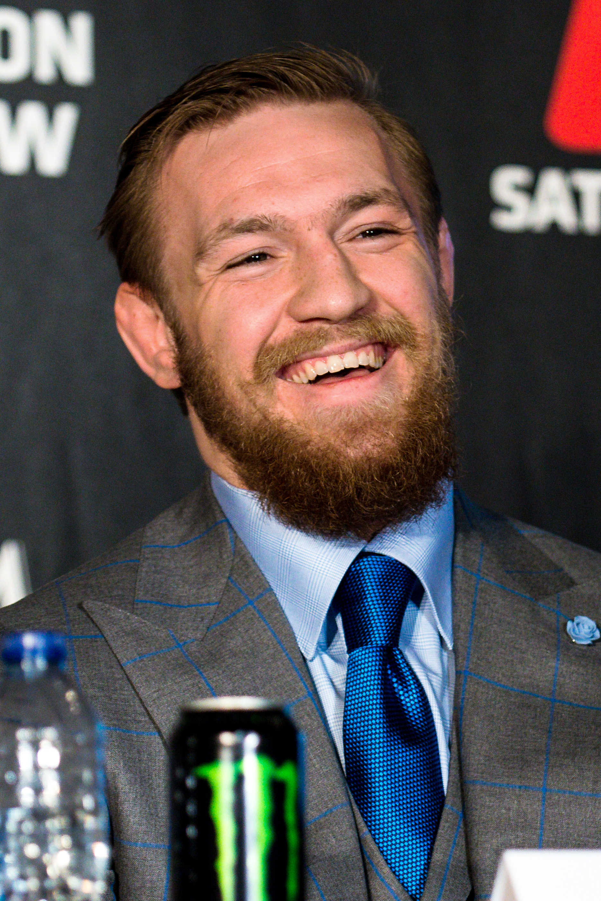
Photo: Andrius Petrucenia / UCinternational, via Wikimedia Commons — CC BY-SA 2.0. Cropped from original.
As the biggest star in the history of MMA, McGregor is very familiar with the uglier
side of fight negotiation and has had his fair share of run-ins with the UFC.
After returning from his MMA hiatus in January 2020 with a victory over Donald
‘Cowboy’ Cerrone, McGregor was keen to keep his momentum going by remaining active
throughout the year. Even with the COVID-19 pandemic halting global sporting events,
the UFC only missed five scheduled events and returned to televised events less than
two months later.
Despite this relatively short break and McGregor’s desire to stay
active, we wouldn’t see McGregor until the 24th of January, 2021 when audiences were
allowed back to events, a factor 16-time MMA Journalist of the Year Ariel Helwani
cited for the UFC's reluctance to let him fight:
"McGregor wants to fight right now,
but they [the UFC] aren't keen on getting him a fight because they can't make money
off that gate right now." Helwani said.
Flash forward to this past year and McGregor made public his frustration at not being
allowed to fight on the UFC White House card:
"They usually put me on UFC 201, or 301,
like a double sale. The White House was going to hit no matter what. Who gives a f*** who we put on it? So they'd rather put me on another card." McGregor said
"They wheel McGregor out for the second one so it's a double economic take." he continued.
"I can't decide what these men do. I don't doubt them but it's like the fighters right
now are cattle."
McGregor did eventually get a fight booked with Max Holloway on UFC 329, the numbered event after the
White House card. Unfortunately, McGregor seriously injured his knee in the opening moments of the fight,
leading to the referee calling the fight off after just 69 seconds.
He’s since said he’s had successful surgery and is already looking forward to his comeback
bout in 2027, but it remains to be seen how negotiations for that event will play out.
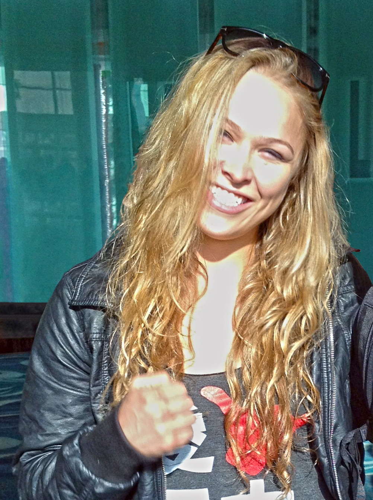
Photo: PedroGaytan / Jdcollins13, CC BY 2.0.
Rousey was a trailblazer for women's MMA with her meteoric rise to stardom seeing
her become the first female Mixed Martial Artist to cross over into mainstream media. Despite
Rousey's time at the top of the UFC ending dramatically with back-to-back losses to
Holly Holm and Amanda Nunes, her starpower never faded.
Such was her superstardom
that almost a decade after her retirement, the announcement of Rousey's return to MMA
against Gina Carano in 2026 sent shockwaves across sports media.
However, there was
another narrative going into the monumental matchup that occupied much of the pre-fight
buildup. The fight was taking place under the MVP promotion and being streamed live on
Netflix, despite both Rousey and Carano being former UFC fighters.
In the buildup to the
fight, Rousey directly attributed this fact to the UFC's new streaming deal with
Paramount+ preventing them from being able justify the event economically. According to
Rousey, the bout had been agreed in principle prior to the new streaming deal being
announced and she was set to earn her highest career payday to date:
"Originally, I
wanted to do it for New Year’s and I went to [Dana] and I’m like you always say I’m the
best fighter you ever worked with, reward me for it.” said Rousey.
“Don’t punish me for
being easy to work with. Give me the best deal you ever gave anybody. He’s like ‘all
right, I’m going to go back and get you the best deal I’ve ever had.’ He came back and
literally brought me a deal where I would make more per pay-per-view buy than anybody in
history. Like if I hit my historical numbers, which I know we would have been able to
exceed, I would have made as much as I did in my entire career." she added.
However, Carano required
more time to prepare for the bout which pushed the proposed date back to after the UFC
signed their record-breaking media rights deal with Paramount+. Rousey claimed that the
structure of this new media deal and the removal of the Pay-Per-View model meant that the
original offer Dana White had offered her no longer stood:
“They’re now a publicly traded company and how do I put it — they didn’t want to set a
precedent of giving me the guaranteed money that I deserve because once I raise that tide,
it lifts all the boats,” Rousey said.
“They just made a $7.7 billion deal at Paramount so
it’s in their best interest actually not to put on the best fights possible but to spend as
little money as possible so they can keep it." she added.
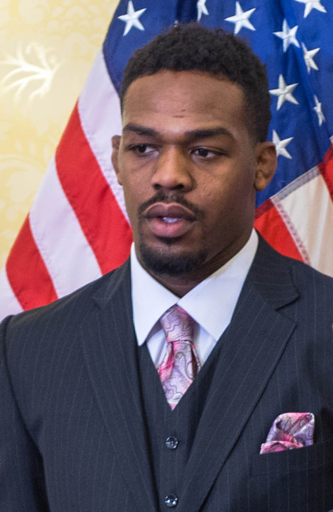
Photo: United States Senate Democrats, 2014. Public domain.
Jon Jones is arguably the greatest mixed martial artist of all time, but his actions outside of the
Octagon have garnered just as much attention as his UFC accolades. Over the years, the UFC has stuck by Jones
through failed drugs tests and arrests but his recent actions seem to have been the last straw.
After refusing to defend his undisputed heavyweight title against interim champion Tom Aspinall and instead
opting for retirement, Jones was stripped of his heavyweight belt in June 2025. However, less than three
weeks later, Jones then teased his desire to compete at the UFC’s White House event which was scheduled
for 2026.
Jones emphasised that at this later stage in his career, he was only interested in fights that
would add to his legacy. Having held up the UFC’s heavyweight division, Jones was publicly scorned by Dana White, who made it clear that
Jones would not be allowed to compete at the White House event. Jones refuted this, claiming that he had been
in negotiations to compete at the event.
Jones was extremely disappointed at the outcome and at Dana’s public suggestion that he was never in contention to compete at the event. Jones subsequently asked to
be released from his UFC contract so that he may explore options outside of the UFC.
"Dana, you were heated about why I'm not on the White House card, but let's clear something up," Jones
wrote on X.
"My team and I were actually negotiating with the UFC for that fight. Real negotiations. I
even came down from my original number, and what was I offered in return? I was lowballed." he continued.
"If the UFC truly feels like I'm done, then I respectfully ask to be released from my contract today."
As it currently stands, Jones is still not scheduled to compete in the UFC despite still being under
contract with the organisation.
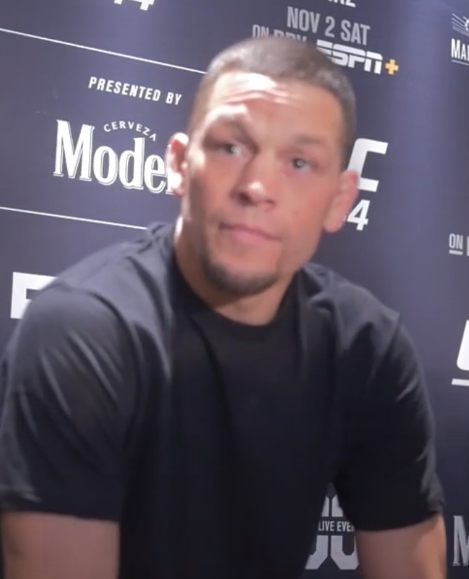
Photo: MMAnytt / YouTube, CC BY 3.0.
Another one of the 2010’s biggest stars, Nate Diaz reached the upper echelons of MMA notoriety
in 2016 after his pair of fights with Conor McGregor. His nonchalant
attitude, candid demeanour and antics outside of the cage endeared him to the fanbase who supported
him regardless of his results in the cage.
Therefore, even after the final fight of his UFC contract in 2022 and seemingly past his athletic
prime, Diaz’s stock within combat sports was still incredibly high. After testing free agency and
competing in two boxing fights against Jorge Masvidal and Jake Paul respectively, it was announced
that Diaz would be returning to MMA in 2026, but not with the UFC.
Despite competing for the UFC 27 times across 15 years, Diaz’s return would be on the same MVP card as
Ronda Rousey vs Gina Carano. What’s more, his opponent would be another former UFC fighter Mike
Perry.
While there was seemingly no bad blood between Diaz and the UFC over the decision, Dana White
did confirm that they were in negotiations in the lead up to the MVP announcement:
“He came in and met with me a couple of weeks ago. We had a good time, and I think Nate just got an
offer he couldn't refuse. I haven't talked to him since then, but I'm happy for him.” said White.
Despite the amicable relationship between Diaz and the UFC, over the years Diaz has taken to social
media on several occasions to plead for his release from the organisation, citing pay issues and
unfair contracts. The most notable of these came in 2022 when Diaz claimed the UFC was trapping him
by not offering him fights.
“They're slow-rolling me; they're trying to keep me under contract," Diaz said.
"And I've been doing
all I can. I've never asked for so many fights in my life. ... Even right now, they're not letting me
get in there and finish my contract." he added.
"UFC, can I please have my last fight and be on my way?"
"Give me anybody. I want to
fight next month. July, August at the latest, and I want to be on my way. I'll fight tonight."
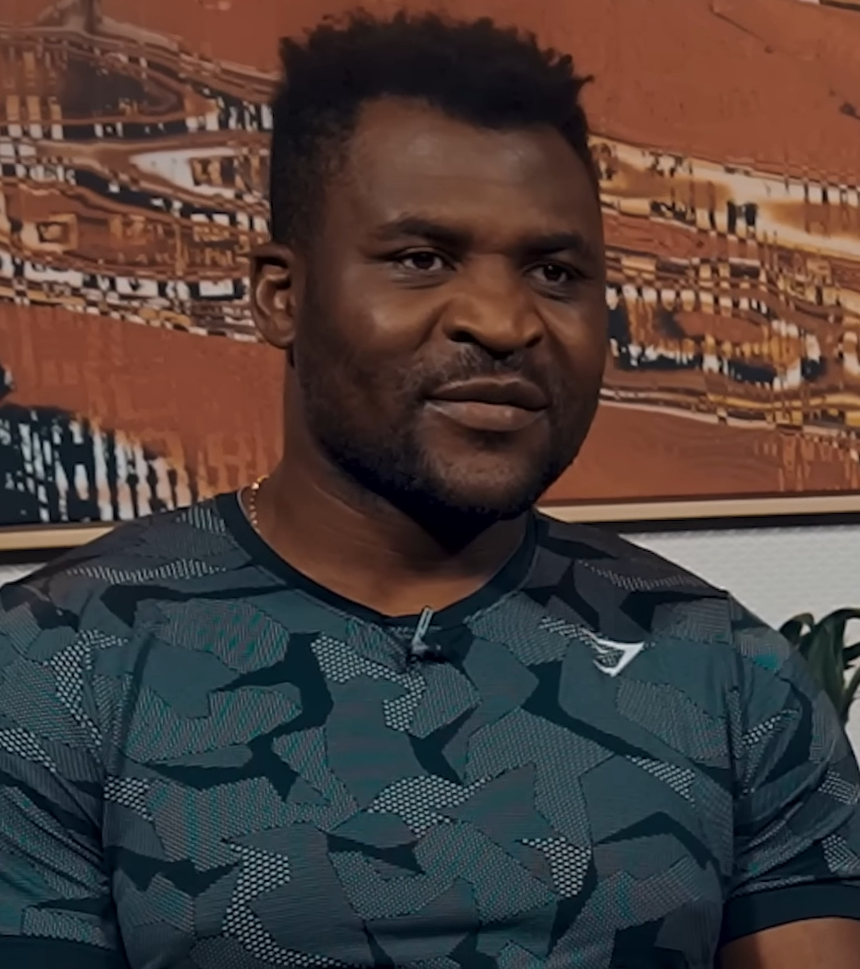
Photo: Mike Tyson, via YouTube, CC BY 3.0. Image extracted from “Mike Tyson and Francis Ngannou 2023”.
Francis Ngannou is the only person in this list who has completely cut ties with the UFC. Ngannou
publicly parted ways with the organisation in 2023 following failed contract negotiations despite being the
reigning heavyweight champion at the time.
After leaving the UFC, Ngannou signed with PFL citing that they were willing to offer terms alongside
financial incentives that the UFC weren’t. This deal also allowed him to explore other combat sports
alongside MMA and in 2023 he competed against Tyson Fury in a boxing fight.
Few gave Ngannou a serious
chance in the bout, but the contest ended up being a split decision in Fury’s favour. Many media members
suggested Ngannou had been robbed by the judges and the entire situation elevated his stardom to a new
level. Despite losing his subsequent boxing fight against Anthony Joshua in 2024, it was evident that
Ngannou’s stock within combat sports had risen significantly.
In March 2026, it was announced that Ngannou’s deal with the PFL had expired making him a free agent.
In his only bout with the PFL Ngannou beat Renan Ferreira who had won their most recent heavyweight tournament, prompting many to claim that he was still one of
the best heavyweights on the planet.
While this technically opened up the possibility of a return to the UFC, both parties had dismissed
the idea due to their poor relationship. Instead, Ngannou would also compete on the MVP card alongside
Ronda Rousey and Nate Diaz.
What’s more, during Ngannou’s walkout for his fight against Philip Lins,
the UFC announced the return of Conor McGregor against Max Holloway. Dana White denies this was
intentional.
Despite the UFC’s heavyweight division going through some turbulent times with undisputed champion Tom
Aspinall absent due to injury and seemingly facing his own battle with the UFC, it looks like fans are no
closer to seeing Francis Ngannou return.
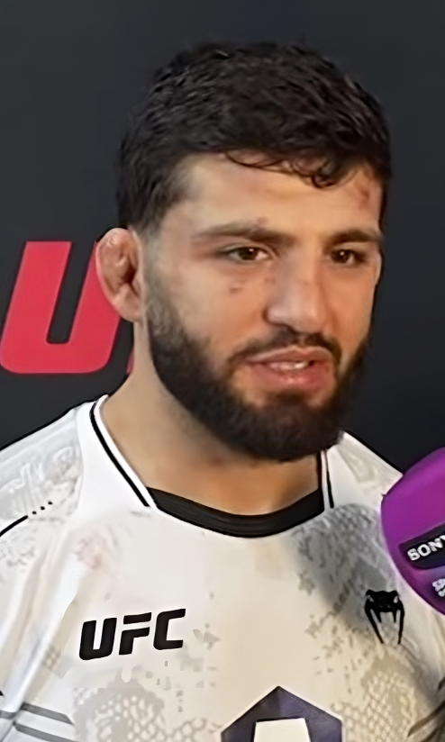
Photo: inFocus media / Wikimedia Commons, CC BY 3.0.
Arman Tsarukyan is the only fighter on this list who is still in the middle of his active MMA career.
Tsarukyan is only 29 and has been in and around the title picture of the lightweight division since the
end of 2024 when he beat former champion Charles Oliveira.
Tsarukyan was scheduled to compete for the
lightweight belt in January 2025 against Islam Makhachev but pulled out of the contest the day before due
to injury — a fact that the UFC has seemingly held against him ever since.
Despite being next in line for
the belt at the start of 2025, Tsarukyan’s next contest would come against number six-ranked contender Dan
Hooker in November. Even after winning the fight dominantly and being the consensus number one contender,
Tsarukyan was still passed up for the interim lightweight title bout in January 2026.
Tsarukyan has been absent from the UFC for the entirety of 2026 so far, yet he’s continuously claimed that he is
waiting for a fight offer. He’s remained very busy by competing in 10 grappling matches, potentially a nod to the
UFC that he’s ready and willing to compete.
On the 6th of August it was announced that Tsarukyan would face Mauricio Ruffy at UFC 331 in September.
Ruffy is currently ranked seventh at lightweight meaning once again Tsarukyan is having to wait his turn for
a title shot.
Current lightweight champion Justin Gaethje is unlikely to compete again this year and with several
big players in the lightweight division still unmatched, who knows how long Tsarukyan will have to wait for
his crack at the belt.
At face value each fighter's absence has its own explanation, whether it’s
a contract dispute, a retirement, a turned-down offer or a breakdown from
a previous fight. Taken together, they describe a promotion that is becoming
less reliant on superstars and looking to make themselves the real draw.
Ronda Rousey’s assessment of the situation seems to be the most apt: the
Paramount+ deal has limited the UFC’s ability to platform their biggest stars.
With money now guaranteed upfront and no additional revenue from the
Pay-Per-View model, the UFC has no financial incentive to platform its biggest
stars outside of continuing to grow their brand.